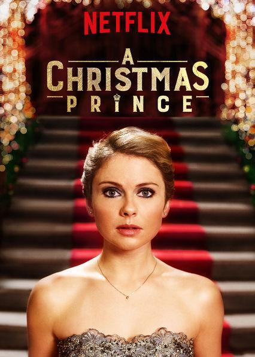

THE FOREIGN ROMMANCE MOVIES THAT I RECOMMEND TO YOU
Pride & Prejudice(2005)
Pride and Prejudice is an 1813 novel of manners written by Jane Austen. The novel follows the character development of Elizabeth Bennet, the dynamic protagonist of the book who learns about the repercussions of hasty judgments and comes to appreciate the difference between superficial goodness and actual goodness.
Stars: Keira Knightley / Elizabeth Bennet --- Matthew Macfadyen / Mr. Fitzwilliam Darcy --- Rosamund Pike / Jane Bennet --- Simon Woods / Charles Bingley
IMDB Rating: 7.8/10
Call Me By Your Name(2017)
A 17-year-old Jewish-American Italian teenager named Elio lives with his parents far from the city in the northern part of Italy. His father, an archaeology professor, invites Oliver, an American Jewish graduate student, to live with his family and help with academic paperwork during the summer of 1983.
Stars: Timothée Chalamet / Elio Perlman --- Armie Hammer / Oliver --- Michael Stuhlbarg / Mr. Perlman
IMDB Rating: 7.8/10
The Princess Switch(2018)
While working as a pastry chef in Chicago, Stacy encounters Margaret, Duchess of Montenaro, a beautiful woman who looks exactly like her, a week before Christmas, and the two decide to replace each other for a few days. During this small exchange, Margaret falls in love with Stacy's handsome co-worker, and Stacy falls in love with the Prince, who is Margaret's fiancé.
Stars: Vanessa Hudgens / Duchess of Montenaro --- Alexa Adeosun / Olivia Richards --- Mark Fleischmann / Frank --- Robin Soans / Kindly Old Man
IMDB Rating: 6.0/10

A Christmas Prince(2017)
He's a really handsome prince. On top of that, this Principality is the most important task assigned to it to date. The new year comes early for an up-and-coming young journalist: he is sent abroad to make news about a cool prince who is ready to become king.